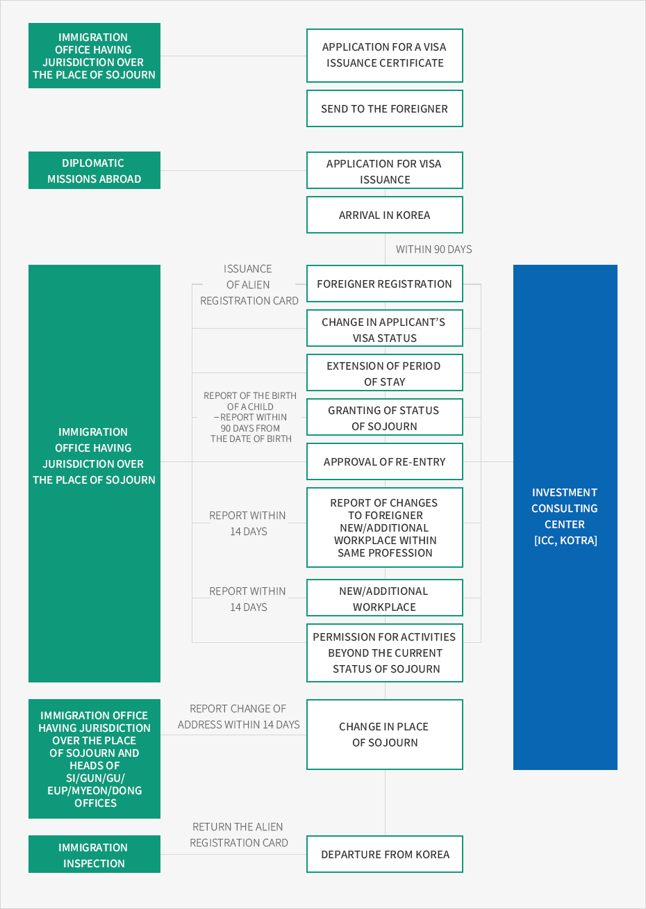

Corporate Investment Visa Issuance and Stay in Korea
- Home
- Start Investment
- Visa Issuance · Stay in Korea
- Corporate Investment Visa Issuance and Stay in Korea
- Entry
- Corporate Investment Visa Issuance and Stay in Korea
- Visa-Related Services for Foreigners
- Application for Visas by Status of Sojourn
- Favorable Immigration Policies


- Immigration office having jurisdiction over the place of sojourn
- Application for a visa issuance certificate
- Send to the foreigner
- Diplomatic missions abroad
- Application for visa issuance
- Arrival in Korea – Within 90 days
- Immigration office having jurisdiction over the place of sojourn
- Foreigner registration (Issuance of alien registration card)
- Change in applicant’s visa status
- Extension of period of stay
- Granting of status of sojourn (Report of the birth of a child – Report within 90 days from the date of birth)
- Approval of re-entry
- Report of changes to foreigner
- New/additional workplace within same profession (Report within 14 days)
- New/additional workplace (Report within 14 days)
- Immigration office having jurisdiction over the place of sojourn and heads of si/gun/gu/eup/myeon/dong offices
- Change in place of sojourn (Report change of address within 14 days)
- Immigration inspection
- Departure from Korea (Return the alien registration card)

Visa Issuance
Procedures
The Minister of Justice has the authority to issue visas, but the authority may be delegated to heads of diplomatic offices as prescribed by Presidential Decree. Consequently, a foreigner may apply for and obtain a visa from the head of a diplomatic office; arrive in Korea and go through immigration at the airport to obtain a status and period of stay (when holding a short-term visa or when the foreigner is a citizen of a visa waiver country); or may obtain a certificate or number of visa issuance confirmation from the immigration office, submit the certificate to a diplomatic office, and obtain a visa.Visa Issuance
- A foreigner may apply for visa issuance to the head of a diplomatic office and obtain a visa.
Scope of visa issuance: Visas delegated by the Minister of Justice, mostly for short-term visits - A foreigner who plans to enter Korea may directly apply for and obtain a visa, or the inviting party may apply for and obtain a certificate or number of visa issuance confirmation from the immigration office with jurisdiction over the inviting party’s place of residence. In the case of the latter, a foreigner who plans to enter may state the number of visa issuance confirmation on the visa application form, submit it to the head of a diplomatic office, and obtain a visa.
- A foreigner who holds a short-term visa or is from a visa waiver country must change their status (D-8, etc.) at the immigration office.
※ Validity of the certificate of visa issuance confirmation: Three months
Alien Registration
Any foreigner holding a long-term visa that permits a stay of 91 days or more must apply for alien registration within 90 days from the date of entry at the local immigration office with jurisdiction over their residence.Change of the Status of Sojourn
In order for a foreigner to engage in activities that do not fall under the previously approved status of sojourn, the foreigner must obtain permission for the change of the status of sojourn. A foreigner who engages in other activities beyond the status of sojourn without permission may be punished with a fine not exceeding KRW 20 million or a deportation order.Matters to Be Reported
Change of Workplace
A foreigner who plans to change or add a workplace within the status of their sojourn must first obtain permission for a change of workplace or an additional approval. A foreigner who possesses professional knowledge, technical abilities, or skills (E1~E7 visa) must give notification within fifteen days from the day of the change or addition of a workplace. A workplace that engages or recommends a foreigner without permission for change or addition of workplace may be subject to a fine not exceeding KRW 10 million or a deportation order.Activities Beyond the Status of Sojourn
In order for a foreigner to engage in activities that fall under the other status of sojourn in addition to permitted activities, the foreigner must obtain permission for the other activities beyond the status of sojourn. A foreigner who engages in other activities beyond the status of sojourn without permission may be punished with a fine not exceeding KRW 20 million or a deportation order.Change of Residence
A foreigner who changes their place of residence must give notification within fourteen days from the day of change of residence to the head of their city(si)/county(gun)/district(gu), the head of their eup(town)/myeon(township)/dong(neighborhood), or the head of the immigration office with jurisdiction over their place of residence. Failure to give notification can result in a fine not exceeding KRW 1 million.Obligations of Employers of Foreigners
When an employer of a foreigner who is eligible for employment dismisses the foreigner, or when the foreigner resigns, dies, or absconds, the employer must—within fifteen days of becoming aware of any such changes—notify the head of an immigration office. Failure to give notification can result in a fine not exceeding KRW 2 million.※ Source : The Practical Guide for Foreign Employment and Immigration (Gilnam Park · Bongsoo Jung, Kang Nam Labor Law Firm)